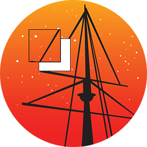

Astrocut
A Python package for making astronomical cutouts.
Installation
Documentation
Astrocut provides tools for making cutouts from sets of astronomical images with shared footprints. It is under active development.
Three main areas of functionality are included:
- Solving the specific problem of creating image cutouts from sectors of Transiting Exoplanet Survey Satellite (TESS) full-frame images.
- General FITS file cutouts incuding from single images and sets of images with the shared WCS/pixel scale.
- Cutout post-processing functionality, including centering cutouts along a path (for moving targets) and combining cutouts.
GitHub Repository